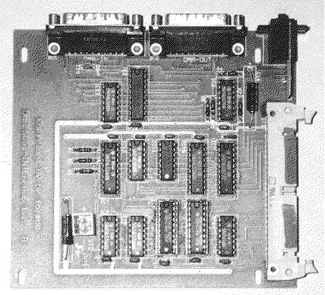

Previous
Next
TOC
Von Protar gibt es mindestens zwei verschiedene Hostadapter. Beide
Typen haben gemeinsam das nur eine SCSI Festplatte angeschlossen
werden kann und diese muß die Geräteadresse SCSI ID0 haben und der
Paritycheck muß an der Festplatte ausgeschaltet sein. Die ACSI ID
wird am ID-Schalter links neben den ACSI Anschlußbuchsen eingestellt.
Achtung: Die Protar Software läuft auch nicht mit jeder x-beliebigen
Festplatte, unabhängig welcher Hostadapter vorliegt. Weiterhin kann
es durchaus sein, das die Protar Software eine Festplatte mit einem
Interleave größer 1 einrichtet, also nicht wundern wenn eine Fest-
platte nicht mehr ihre komplette Leistung zeigt. Weiterhin ist ein
Betrieb auf dem MegaSTE und dem TT030 erst ab der Softwareversion 3.0
möglich!
Am Protar Hostadapter der Serie II geht keine (Platinenaufdruck
DMA-SCSI-Interface 1.2) andere Software, weil der Hostadapter nicht
Atari-kompatibel ist (dafür aber arbitrieren kann wie beispielsweise
der Atari TT030 und Falcon030 wenn man bei diesen Computern einen
entsprechenden Festplattentreiber verwendet!).

Auf gut Deutsch, man muß bei diesem Hostadapter die originalsoftware
benutzen oder gleich einen neuen Hostadapter kaufen.
Aufgrund der inkompatibilität der Protar Hostadapter ergeben sich da
leider einige Probleme.
Nach einem Reset (oder kurzem Ausschalten) bleibt der Bildschirm
dunkel und die Laufwerkslampe leuchtet nicht, keine Aktivität:
Laut Protar soll dies ein Hardware-Fehler der MEGA ST-Modelle sein
der jedoch nur sporadisch auftritt. Den Computer ausschalten und es
nach 10 Sekunden nochmal probieren.
weiterblättern
Kapitel Die SCSI Hostadapter der Fa. Protar, Seite 1